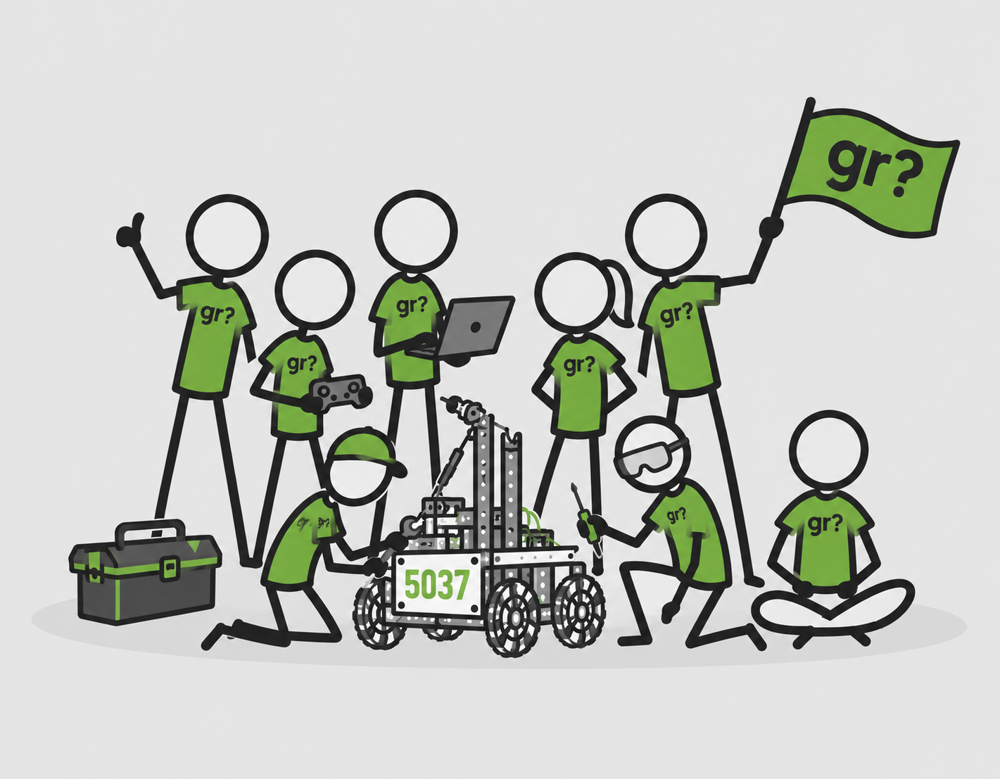

About got robot?
Building Teamwork, Character, and Robots. In that order.
Our Team
got robot? was founded in Elgin, Illinois in 2008. Our mission is to inspire students to pursue careers in STEM fields by providing hands-on experience in robot design, programming, and engineering.
Over the years, we have competed in various FIRST Tech Challenge (FTC) competitions, consistently ranking highly and earning numerous awards. In addition to competition, we participate in outreach events to promote STEM education in our community.
Our team is made up of students aged 13 - 17 from multiple schools and homeschool organizations within and around the Elgin area, supported by dedicated mentors and coaches.

FIRST Tech Challenge
The FIRST Tech Challenge (FTC) is a robotics competition for middle and high school students. The program was founded by Dean Kamen, an inventor, entrepreneur, and advocate for STEM education.
FTC teams are challenged to design, build, and program robots to compete in an exciting game that changes every year. While the project is centered on the robot, the overall mission of FTC is to inspire students to pursue careers in science, technology, engineering, and math.
FTC emphasizes innovation, teamwork, and gracious professionalism - competing with a sense of mutual respect while still striving to win.
Learn More About FTCContact Us
Email@email.com
Elgin, IL